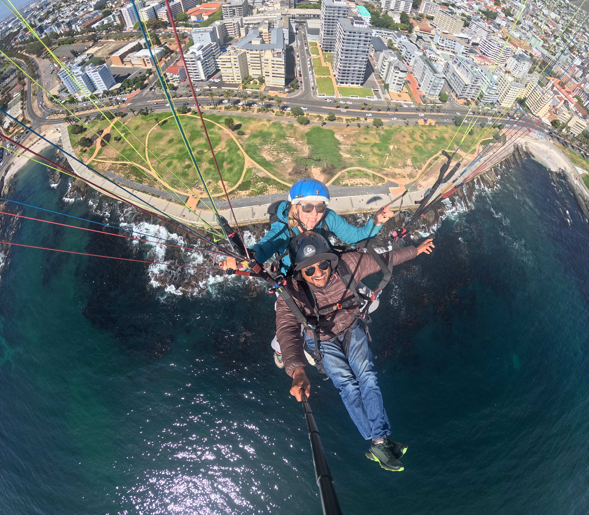

Fly tandem over Cape Town
Table Mountain on your left, the Atlantic below, the whole city at your feet.
About the flights

A tandem paragliding flight is a new and exciting way to see Cape Town. We launch from Signal Hill or Lions Head and glide out over Sea Point or Camps Bay, with Table Mountain and Lion's Head behind us and the ocean below. These are relaxed, scenic flights, no experience needed.
Fly with one of Cape Town's few female tandem pilots. Paragliding is the most accessible form of aviation there is: no engine, no cockpit, just a wing, the wind, and the view.
What to know
Before you fly
Wear closed shoes and a windproof jacket, and bring sunglasses. We will arrange a meeting point
Weather dependent
Flights depend on weather conditions; flights will only be confirmed on the day
The paperwork
Every passenger signs a quick indemnity form on their phone before flying — it takes about two minutes.
Get in touch
https://www.instagram.com/flyskyzephyr/
Ready to fly?
Complete and sign the indemnity form on your phone — quick and paperless.
Open the Indemnity Form